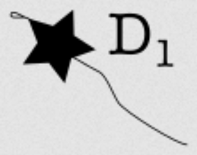

Chapter 16 Block elements
A traditional document consists of lines of text organized into blocks. A markdown document is likewise organized into inline elements that are put together into blocks.
- Inline elements
- words and spaces,
- a few words in italics,
- a formula in the flow of the text, such as \(x+y=c\).
- Block elements
- paragraphs
- section headings
- images, figures, tables
- …
This chapter deals with copyediting block elements. Footnotes are dealt with here with block elements. Formulas with inline elements, even if they are sometimes displayed as blocks.
NOTE TO SELF: formula content is in the previous chapter, but equation blocks are dealt with here. Idea: treat formula content and LaTeX encoding in the previous chapter, but treat displaying formula and numbering here (with a reference to the previous chapter.)
16.1 Paragraphs
New paragraphs are indicated in markdown by leaving an empty line. That is, an empty line separates two paragraphs.
In typography paragraphs can be separated from each other in two ways: indentation of the first line (common in books) or vertical spacing (common on the web). In the first-line ident style, in some traditions (English) paragraphs don’t have a first-line ident after headings, in others (French) they do. Which style you adopt should be controlled by your template and not require special formatting in your markdown manuscript.
Exceptionally you may need a line break that does not start a new paragraph. See the inline elements chapter.
16.1.1 First-line indentation after quotes, lists, etc.
Requires: the first-indent-line filter. (If you don’t use it, see the
alternative solution below.)
Note: The advice of this section only matters if your journal uses the first-line indentation style for separating paragraphs. If the vertical spacing style is used instead, following the advice will do no harm but will not visibly affect the output.
Problem. Text that directly follows a list, quote, figure, table or other indented material (statement) may either be a continuation of the previous paragraph or the beginning of a new one. That is a matter of meaning (is the text finishing the previous idea, or beginning a new idea?) and may not be clear-cut in all cases. If your journal uses first-line indentation to separate paragraphs, continuations should not be typset with an indented first line, but new paragraphs should.
Solution. When the text below a quote, list etc. is a new paragraph,
begin it with the code \indent. If it’s
a continuation, no need to add anything. (Though you may insert \noindent
at the beginning of the continuation text to remind yourself you have
examined it and classified it as continuation.) If it is
not clear whether the following text is a paragraph or not, you may ask the
author or simply pick one way or the other.
Example. In the text below, the text after the quote is a continuation
of the paragraph before the quote, but the text after the table is a new
paragraph, so we insert the \indent code.
The first study on that topic was @Obscureapaer. In detailing their results the
authors concluded:
> It's unclear what is going on here.
And we agree that this is was the data suggests, as shown by the
fatality rates in the table below.
Test group Control group
----------- ----------------
.9 .9
\indent The second study on that topic was @Anotherobscure paper... Optionally, we could have inserted the code \noindent at the beginning of the
line And we agree that..., to remind ourselves that we treat this as a
continuation of the previous paragraph.
See the first-line-indent filter’s page for more options and information.
Dialectica guideline. Our template uses the first-line indentation style of
separating paragraph, and the first-line-indent filter. Text that is below
a list, quote, figure, statement, … will be typeset as a continuation of the paragraph before unless it starts with the \indent code. We add the \indent
code when it is a new paragraph. If in doubt, ask the author or typeset either
way.
Alternative solution. If your journal does not use the first-line-indent
filter, you can only control first-line indentation for the LaTeX/PDF output,
and the defaults are the opposite, namely:
- if the text after a quote, list etc. is a new paragraph, no need to add
anything. (You may add
\indentif you wish.) - if it is the continuation of the previous paragraph, add
\noindentat the beginning. Example:
16.1.2 Special first-line indentation cases
Requires: first-line indent filter.
If for some reason the first-line indentation needs to be added to or
removed from a specific paragraph, just begin this paragraph with the
corresponding code: \noindent or \indent.
If you do not have the first-line indent filter, the codes \noindent and
\indent will only affect LaTeX/PDF outputs.
This should only be used in exceptional cases. If you need to add these codes regularly (e.g. to control first-line indentation after headings), your journal template is not set up correctly.
Dialectica guideline. Except in the cases discussed in the previous section (text following a quote, list, statement or other indented material), we do not expect to need to adjust first-line indentation manually.
16.2 Headings
Headings of different levels (section, subsection, subsubsection) are encoded
as a line starting with #, ##, ### followed by the title.
| I want | I type |
| 1. Section heading | # Section title |
| 1.2 Subsection heading | ## Subsection title |
| 1.2.1 Subsubsection title |
### Subsection title |
| lower titles | ####, #####, ###### |
In Dialectica headings are numbered up to the subsection (#, ##, ###). Headings of level four (####) are used for un-numbered smaller units.
We have also two “inline” headings style, where the heading title is displayed at the beginning of the following paragraph rather than on its separate line. They are level 5 (#####) and level 6 (#######).
We discourage authors from using headings below the subsection (##) in articles though, though we can use them if the they improve readibility.
Do not manually add numbers to section headings. They are automatically added by the house template.
| BAD | GOOD |
|---|---|
# 1 Methods |
# Methods |
# 1 |
# |
If the heading has no title, you should simply enter # (or the relevant level)
with no title.
16.3 Footnotes and endnotes
Your template decides whether notes are printed out as footnotes or endnotes. The encoding is the same whichever it uses. We’ll call them “notes” here.
There are two ways to enter notes. The first is inline, without identifier. This is suitable for brief notes:
This is the main text.7 This continues the main text.
This is the main text.^[In footnote, I distract you with an irrelevant point.]
This continues the main text.The second is a reference link, with identifier. This is suitable for longer notes, and required if a note has several paragraphs:
This is the main text.8 This continues the main text.
It spans over several paragaphs.
This is the next paragraph that isn’t part of the footnote.
his is the main text.[^myidentifier] This continues the main text.
[^myidentifier]: This note takes more space.
It spans over several paragaphs.
```bash
@echo "it even includes a code listing".This is the next paragraph that isn’t part of the footnote.
Note that the `^` is outside of square brackets in the inline style, inside it
in the reference style. In the reference style the footnote can be placed
anywhere in the document (common choices are at the end of the
current block or at the end of the current chapter, or at the end of the
document or chapter).
Numbers can be used as identifiers in the reference style:
> This is the main text.[^1]
[^1]: this is the foonote.
```markdown
> This is the main text.[^1]
[^1]: this is the foonote.This is not recommended if you are planning to fuse several documents, e.g.
chapters of a book, as two [^1] footnotes in seperate chapters will generate
a conflicting reference and an error message.
The numbers here are identifiers only, they need not (and will probably not) match the ones in the final output.
In multi-paragraph footnotes, indent each block with two spaces to indicate that it’s part of the footnote rather than resuming the main text, as in the example above.
Cross-reference to footnotes has to be done manually. Don’t enter them before you know that the footnote numbers are final. See the cross-referencing chapter.
Dialectica guidelines
It’s fine to use link references with simple numbers: [^1], [^2]. These
will be automatically generated by pandoc when converting the manuscripts and
it is too time-consuming to replace them. Our production process ensures no
conflict across two articles within the same issue.
16.4 Quotations
Quotations should only be used for quoted material: text coming from another source. For other indented block of materials, cf Statements.
Quotations are marked by either starting a paragraph with > and indenting it,
or by starting each line of the paragraph with >, or simply having the first line starting with >
This is a quotation. The second sentence is on an indented line.
This is another quotation. The second sentence is on a line starting with
>.
This is quotation in the lazy style. The second line isn’t even indented or starting with
>.
> This is a quotation.
The second sentence is on an indented line.
> This is another quotation.
> The second sentence is on a line starting with `>`.
> This is quotation in the lazy style.
The second line isn't even indented or starting with `>`.For readability avoid the lazy style.
The quotation citation can be included at the end or in foonote:
I am happy. (Jane Doe 2020)
I am sad.9
You should distinguish several consecutive quotations from a single quotation with several paragraphs. One way to do this is as follows:
This is a first quotation.
This is a second quotation.
This is not a third quotation, but a further paragraph of the second quotation.
> This is a first quotation.
> This is a second quotation.
>
> This is not a third quotation, but a further paragraph
> of the second quotation.
>
> ```bash
> @echo "this code block is yet a first block in that quotation too"
> ```That is, we start all lines of the long quotation with >, including the blank lines that separate its paragaphs or blocks. By contrast, we leave an empty line
between two distinct quotations.
An alternative is instead to only have > at the beginning of a long quotation
and indicate with subsequent paragraphs with an indent:
This is a first quotation.
This is still part of the first quotation.
This is a second quotation.
> This is a first quotation.
This is still part of the first quotation.
> This is a second quotation.You can have quotations within quotations.
As someone said once:
The life unexamined isn’t worth living.
16.5 Lists
16.5.1 Simple lists
Simple unnumbered lists
Result:
an item
- a sub-item
- another sub-item
an item
You can use - as well as *, and you can mix markers.
Numbered lists:
Result
- item
- item
- sub item
- sub item
- another item
Note that markdown ignores the particular number and number format you enter.
Result
- apples
- peaches
- pears
- bananas
- cherries
You can put blocks (paragraphs, quotations, etc.) as list items. To do so, align the following blocks with a couple of spaces:
1. This list item has not just one paragraph.
It has two paragraphs.
2. > This section list item
> contains a quotation.
> And the quotation is two
> paragraphs.Result
- This list item has not just one paragraph.
It has two paragraphs.
This section list item contains a quotation.
And the quotation is two paragraphs.
16.5.2 What to do if a list has non-standard labels?
Problem: a text has a list with regularly numbered items (1, 2, 3, or a, b, c, …) but uses * or ' labels in some cases.
There are two solutions to this:
- If it’s not too important to single out some items with * or ', then you can re-number the author’s list, using a simple numbered list instead.
- If it is important to preserve the author’s labels, e.g. if it helps comprehension to see item ’2**’ as a revision of item ‘2’, then use custom label lists.
16.5.3 Numbered examples lists
Some papers have examples (or other items) that are scattered throughout the paper but numbered continuously. For example:
Sentence (1) below illustrates the Liar paradox:
- Sentence (1) is false.
Not all self-referential sentences are paradoxical, however:
- This sentence contains several words.
- Sentence (3) is written in English.
You enter those as follows using (@) or (@identifier):
Sentence @liar below illustrates the Liar paradox:
(@liar) Sentence (@liar) is false.
Not all self-referential sentences are paradoxical, however:
(@) This sentence contains several words.
(@three) Sentence @three contains several words.(@) is enough to create a numbered example item. You add an
identifier as in (@item3) if you need to refer to it later.
To refer to it, simply use @identifier, as above, which you can wrap between
parentheses if desired.
Warning. References to numbered examples do not generate hyperlinks and cannot be placed within links.
Problem. If a paragraph starts by a reference to a number example that you want to wrap between parentheses, markdown will wrongly think that it’s a new numbered example:
The sentence below illustrates the Liar paradox:
(@liar) Sentence (@liar) is false.
(@liar) cannot be true, because...Solution. “Escape” (i.e., put a backslash in front of) the first parenthesis
The sentence below illustrates the Liar paradox:
(@liar) Sentence (@liar) is false.
\(@liar) cannot be true, because...16.5.4 Custom labels lists
Requires: the labelled-lists filter.
A simple illustration of the custom label syntax:
* [Premise 1]{} This is the first claim.
* [Premise 2]{} This is the second claim.
* [Conclusion]{} This is the conclusion.This generates the following list (process this file with the filter to see the result):
- Premise 1 This is the first claim.
- Premise 2 This is the second claim.
- Conclusion This is the conclusion.
In general, the filter will turn a bullet list into a custom label list provided that every item starts with a Span element.
- A Span element is inline text (i.e., not block like a paragraph)
that optinally has some attributes. The default syntax is
[inline text]{attributes}. Inline text will be used as label, placed within round bracket. - There is no need to specify attributes on the Span. But curly
brackets must be present:
[label]won’t work,[label]{}will. - The label can include formatting.
[**T1**]{}will generate a label with strong emphasis (bold by default). - Span elements can also be entered using HTML syntax:
<span>inline text </span>. See [Pandoc manual] (https://pandoc.org/MANUAL.html#divs-and-spans) for details.
If an article has many custom labelled lists with empty
labels (see Arguments), you may set the delimiters to be
empty rather than parentheses by default. See the
labelled-lists.lua filter manual.
16.5.4.1 Commonly used custom labels
See also the section on symbols.
| I want | I type |
|---|---|
| A*, A**, … | A*, A**, … |
| A′, A″, A‴, A⁗ | A′, A″,
A‴, A⁗ |
| A1, A2, … | A^1^, A^2^, … |
| A1, A2, … | A~1~, A~2~, … |
16.5.4.2 Cross-referencing custom-label items
Custom labels can be given internal identifiers. The syntax is
[label]{#identifier}. In the list below, A1ref, A2ref and
Cref identify the item:
* [**A1**]{#A1ref} This is the first claim.
* [A2]{#A2ref} This is the second claim.
* [*C*]{#Cref} This is the conclusion.Note that # is not part of the identifier. Identifiers should start
with a letter and contain only letters, digits, colons :, dots .,
dashes - and underscores _.
Labels with identifiers can be crossreferenced using Pandoc’s citations or internal links.
16.5.4.2.1 Cross-referencing with citations
The basic syntax is:
- Reference in text:
@A1ref. Outputs the label with its formatting: A1. - Normal reference:
[@A1ref]. Outputs the label with its formatting, in parentheses: (A1). A prefix and suffix can be specified too:[remember @A1ref and the like]will output (remember A1 and the like). - The suppressed author style,
[-@A1ref], will be processed as normal reference
You can crossrefer to several custom labels at a time:
[@A1ref; @A2ref]. But mixing references to a custom label
with bibliographic ones in a same citation won’t work: if
Smith2003 is a key in your bibliography [@A1ref; Smith2003]
will only output “((A1ref?); Smith, 2003)”.
Because this syntax overlaps with Pandoc’s citation syntax, conflicts should be avoided:
- Avoid giving the same identifier (e.g.
Smith2005) to a custom label item and a bibliographic entry. If that happens, the citation will be interpreted as crossreference to the custom label item. To make sure you you may use identifiers starting withitem::item:A1ref,item:A2ref, or some other prefix. - The filter should preferably be run before
citeproc, and before other filters that use citations (likepandoc-crossref). It may work properly even if it is run after, thoughciteprocwill issue “citations not found” warnings. To ensure that the filter is run before, just place it before in the command line or in your YAML options file’sfiltersfield.
Alternatively, the citation syntax for crossreferencing custom label items can be deactivated. See [Customization] below.
16.5.4.2.2 Cross-referencing with internal links
In Pandoc markdown internal links are created with the syntax [link text](#target_identifier). (Note the rounded brackets instead of
curly ones for Span element identifiers.) You can use internal
links to cross-refer to custom label items that have a identifier.
If your link has no text, the label with its formatting will be
printed out; otherwise whichever text you give for the link.
For instance, given the custom label list above, the following:
will output:
The claim A1 together with the next claim entail (C).
where the links point to the corresponding items in the list.
16.5.5 Custom-labelled lists within a numbered example list
Requires: labelled-lists.lua, statement.lua.
In some cases we wanted to put a custom-labelled list within a numbered example list. This is particularly difficult when we don’t want any content in the numbered example item other than the embedded list itself.
Solution: place the embedded list within a statement. Note that the embedded content must be indented exactly twice (4 spaces). This works:
(@example-Batu)
::: statement
* []{delimiter=none} Every head of a horse is a head
of an animal.
* [∴]{} Batu is a head of an animal.
::::You should reduce the right margin for the LaTeX output. (LaTeX experts: the statement is placed in a minipage whose with is that of the text minus the default list label width; this is typically too large for an embedded list.)
16.6 Crossreferencing and captioning tables, figures, images, equations
Requires: the pandoc-crossref
filter.
Tables, images can be cross-referenced and can be given a coption text. To cross-reference an image:
To add a caption to the image:
Example with a table:
As the reader can see in @tbl:diffstyles, there are many
options:
+----------+-----------+
| style | features |
+==========+===========+
| ... | ... |
+----------+-----------+
: The different styles of text {#tbl:diffstyles}The identifiers of images or figures must have the form #fig:...,
those of tables #tbl:..., those of equations #eq:....
When crossreferencing them we use citation syntax with the prefixed
identifiers: [@fig:my-image], @tbl:my-table, etc. This will
print “figure 1”, “table 2”, etc. To get “Figure 1”, “Table 2” you capitalize the prefix: @Fig:..., @Tbl:....
Details are in the Pandoc-cross-ref documentation here.
16.7 Tables
16.7.1 Basic table syntax
There are three formats to encode tables in pandoc’s
markdown (‘simple’, ‘grid’ and ‘pipe’).
Some are easier to type, some easier to read, some give more functionality (i.e.
having several lines in a cell).
The easiest way to create a table is to use RStudio’s visual editor. The editor allows you to create multiline cells, resize the columns a bit and so on. Alternatively, you can write tables in the markdown code. An online markdown table generator can help.
For tables with large cells (a lot of text in the cell), you might need to expand the “wrap line size” for the RStudio editor. The visual editor ensures that your markdown files has lines of a certain length. These don’t matter to the final PDF / html output, but they make your markdown source more readable. Now when you have a large table, you might need a bit more horizontal space in the markdown. For that you increase the wrap line size for the editor. In your file metadata block:
Replace 72 with e.g. 80 or more if needed. You’ll see the difference if you go to the visual editor and expand your table’s columns a bit.
In the markdown, words in tables should not be cut. If your markdown table is like this:
Then “knowledge” and “valuation” will print as “know ledge” and “valua- tion” respectively. You need to ensure that no word is cut by enlarging your table:
+----------+-----------+
|knowledge | valuation |
+==========+===========+
| ... | ... |
+----------+-----------+Tables found in your document will be turned into that format if their cells require multiple lines. Otherwise they will be turned into the simpler format:
Corner Header 1 Header 2 Header 3
-------- ----------- ----------- -------------
Row 1 Hello My Friend
Row 2 1asdoi 23 234You can create tables from scratch (a) in the RStudio visual editor or (b) in markdown code. For the latter you can use a online markdown table generator.
16.7.2 Cells that span several rows or several columns
Unfortunately this is not feasible in pandoc’s markdown, though that should change in the near future.10
Solution. Enter your table with all cells, and put the content of any merged area in the top left cell of the merged area. For example, the table below:
Example missing, to be entered in raw HTML
| Cells merged across a row | Head 1 | Head 2 |
|:--------------------------|:-----------------------------|:-------|
| | more | less |
| Row head | Cells merged across a column | |Should be entered as if it was the table below:
Example flawed, to be fixed
| Cells merged across a row | Head 1 | Head 2 |
|:--------------------------|:-----------------------------|:-------|
| | more | less |
| Row head | Cells merged across a column | |A note should be made of the change. Next to the table code you should enter the following:
This will be invisible in the output, but visible to those who edit the file. ‘C2R3’ abbreviates ’second column from the left, third row the top.
We will then have to insert LaTeX and HTML output code directly. See [if-markdown-cant-handle-a-table] below.
16.7.3 If markdown can’t handle a table
Requires: the not-in-format filter. The instructions using
Divs with not-in-format class below require the not-in-format
filter.
In case the usual markdown code for a table doesn’t work, we can insert a set of LaTeX code to the markdown file. The goal is then to have a set of latex code that can be inserted into the articles markdown file and then be run the usual way. For that, there are three steps needed:
- get the latex code for the desired table
- make the table look as desired
- get the code into the markdown file.
Generate a separate markdown file (in the following called “separate .md”, whereas the initial markdown file of the article is called “articles .md”). Here we want to put only the latex code that will be inserted into the articles .md.
- For the first step (get the latex code for the desired table), there are two options:
- Build the latex code from scratch or via the table generator for latex, put the code to the separate .md.
- Build the markdown code from scratch or via the table generator for markdown, put it to the separate .md, let it produce a latex output, copy/paste the latex code to the separate .md (it probably begins with something like “ ” or “\end{table}”).
- Once you have the latex code in the separate .md, you can embed it in the following code:
The \begin{center} and \end{center} lines are optional, their
effet is to center your table in the page.
The LaTeX code will only produce a result in LaTeX/PDF output.
If the markdown code works with HTML output, you should leave it
and embed it in a ::: {.not-in-format .latex} ... ::: Div,
which ensures that the markdown table code is used only in
formats other than LaTeX.
```{=latex}
\begin{center}
[latex code for your table]
\end{center}
```
::: {.not-in-format .latex}
[markdown code for your table]
:::Check how the tables look by producing pdfs from the separate .md (much faster than always producing the whole article).
- From here, you might have or want to change several things:
- “longtable” -> “tabular” (so that it doesn’t rely on longtable package, which doesn’t work within multicolumn environments).
- “”, “” and “” -> “” for simple horizontal lines
- If a vertical line is desired at some point in the table
change latex code
\begin{tabular}[]{@{}lcccc@{}}to\begin{tabular}[]{@{}c|cccc@{}}. See that the number of letters determines the number of columns in the table. The letter “l” in the former code is to change into a “c” in the latter. To have a vertical line after the first column from the left, insert the sign (not letter!) “|” after the first c from the left.
- Once that frame is set, we can insert the code from the separate .md into the articles .md and see how it produces the tables from here.
You may need to do the same to insert HTML code. In that case you
should still leave the original markdown for other formats (JATS-XML), using not-in-format again:
16.7.4 Table aptions
Requires: pandoc-crossref.
If your table is in markdown only, add a caption thus:
+----------+-----------+
|knowledge | valuation |
+==========+===========+
| ... | ... |
+----------+-----------+
: An analysis of knowledge and valuation {#tbl:K-and-V}The optional {#tbl:...} provides an identifier for
crossreferences:
For further details on how to cite see the pandoc-crossref manual.
If your table is in raw LaTeX and markdown, the solution is this:
16.8 Figures (images, diagrams, graphs)
Figures are images, diagrams, graphs and the like. They can be inline or floated or annexed.
- inline: the figure needs to be at a precise point in the text. E.g. “As can be seen in the image below:”, followed by the image, followed by “a triangle can be split into two right triangles”.
- floated: the figure needs to be around a certain point in the text. It can be moved above, below, to the next or previous page, for better appearance. On a webpage, it can shown on the side of the text. Floated images
- annexed: the figure is placed at the end of the article. On a webpage, it can be shown on the side of the text.
Figures can be provided in two ways:
- Separate files.
- Code in markdown or Rmarkdown that generates the figure (particularly good for graphs).
At the moment the Dialectica house template only handles figures as files, so we’ll ignore the code option.
16.8.0.1 Inserting figures as files
Basic syntax:
Where:
file.svgis the source filecaptionis the text that will appear as the image’s caption if the image is treated as a floated.
16.8.1 Prefer vector formats for figures
Diagrams, figures and the like should be provided in vector graphics formats (SVG files or code or TikZ code in LaTeX). Only photos, hand-drawn illustrations and the like should be provided as bitmap (a.k.a. raster) files. If you’re not familiar with the difference, see the explanation below.
If an author provides a diagram in bitmap form we ask that they recreated it in a vector format. Inkscape is an open-source, free software to generate vector images that is fairly easy to use and powerful. Authors who write in LaTeX may try to create in using the TikZ package instead.
16.8.2 Background on vector vs bitmap formats
(Skip this section if you are familiar with the distinction).
What’s the difference between vector and bitmap image files? Bitmap (a.k.a. raster) images are encoded as a grid of pixels. Vector images are encoded as mathematical descriptions of lines and curves. For instance, a vector image may be (the computer-language equivalent of) “draw a circle of radius 10mm around the coordi nate (0,0).” The bitmap equivalent would be a big grid with cells coloured to form a circle. Because of this, vector images scale perfectly and magnify perfectly. Bitmap images can get noisy and pixelated when scaled or magnified. See below if you can tell which is which:

As you can see, the vector (first one) looks smooth when magnified, the bitmap looks pixelated.
Why use vector images for diagrams? They’re much better quality and use much less space. A bitmap diagram easily looks pixelated in print or on a high-resolution screen; it’ll look unprofessional to the reader. Bitmaps in high resolution can look good even in print or when enlarged on a screen, but at the cost of using a lot of space: a 1920*1080 high resolution bitmap easily takes about 1000 times the space of vector version of the same diagram; an article with bitmap images can easily occupy the same space as 10 to 100 articles without. It’s only in the case of highly textured images (e.g. photos) that a vector version would be either impossible or much heavier than a bitmap.
Which file types are vector, which are bitmap?
- JPEG, JPG, PNG, TIFF: bitmap images.
- PDF: can be bitmap, vector, and even images combining the two. The only way to tell is to zoom in a lot and see whether the lines remain perfect (vector) or pixelate (bitmap). File size is also an indicator: vectors are hardly more than a few Kbs, bitmaps can be anything from a few Kbs to one Mb or so.
- SVG: vector. Exception: an SVG file can import bitmaps from other files,
including by URL. So in principle an author could send you a SVG ‘conversion’
that is nothing else than a link to an online version of their image. You’re
very unlikely to encounter that problem, but if in doubt: the SVG file is a
text file, you can open it in a text editor. Look for the tag
<image, e.g.<image href="mybitmap.pgn" width="200px"/>.
How to convert a bitmap image to a vector image? It can’t really be done. The problem is that the computer has to guess from the pixel grid of a bitmap image what’s supposed to be a line, a curve, etc. and that requires some intelligence (think of it like this: we’re going from a limited resolution to infinite precision). This is called vectorizing the bitmap image. Software like Inkscape can try and vectorize images for you, but you have to fiddle with the settings for each specific image, and the results are rarely satisfactory. In most cases, your or the author will have a much easier time recreating the image in vector mode. If you want to try to vectorize anyway, search “vectorize an image in Inkscape” or “convert an image to SVG” online to find some tutorials.
16.8.3 How to create a vector image?
How to create a vector image? Draw it in an editor, or code it in TikZ.
- Drawing in a vector graphics editor. Wikipedia has a [list of visual
graphics editor]. Fully-featured editors will cover all needs but
may require more work. Inkscape is the best
open-source one; Adobe Illustrator a good propertary one. However
for simple diagrams you may be able to get by with a quick-and-dirty
online editor. There are quite a
few of those; try
online svg editorin a search engine (check whether you need to pay to save your file). At the moment
DrawSVG seems good (easy to use, free and no registration, ads).
TikZ diagrams. TikZ is a language to describe vector images that can be embedded in LaTeX. It’s powerful but has a very steep learning curve. If authors can provide them, TikZ diagrams are the best - because any text in those diagrams will be printed out in the journal’s own fonts. TikZ code can be included directly in the markdown. Our template will include them directly in the LaTeX/PDF output and convert them to SVG files for other output formats.
How to create a TikZ diagram? Typically the author needs to go through the (large) TikZ documentation and work from existing examples. But there is also an online visual editor (TikZit) that can help.
16.8.3.1 How to modify a bitmap image
Wikipedia has a list of bitmap image editors. GIMP is the best open-source editor. Adobe Photoshop and Photoshop Elements is a good commercial one, photography-oriented.
16.8.4 Figures with letters or text
Figures often include letters or text. They look best if their fonts are consistent throughout your journal. It is desirable, but not mandatory, your house template fonts. If these can be freely distributed you could ask authors to install them and use them, but that’s a tall order. It’ll typically fall on you to apply house fonts if possible.
- Figures in TikZ code: automatic. TikZ specifies the text, not the fonts, so your house template will render the figures with your house fonts.
- Figures in SVG. Use a good editor like Inkscape with the house fonts installed on your computer. Open the file, select text elements, change their font. It should be quick. Exception: in some rare cases, the original files may have encoded the characters as complicated lines rather than characters proper; if so the editor won’t recognize them as text and change their font. If so your only option would be to remove the original text and recreate it: it is probably more time-costly than it’s worth.
- Figures in bitmap format: can’t realistically be done. Editing in a bitmap editor is possible but probably more time-costly than it’s worth. If you’re settling for a bitmap you’re already tolerating low quality anyway.
16.8.5 Resizing SVG files
If the author provides you with a SVG file that has too much whitespace around, resize it using Inkscape.
- open the file in Inkscape
- select all the content with the arrow tool (click on the top left, drag your mouse to form a rectangle around it). Note: you could try Edit > Select all (Ctrl+A on Win, Cmd+A on MacOS) but this sometimes take the entire page, even if it has a lot of whitespace.
- Go to File > Document Properties. In the “Custom Size” area, expand the “Resize page to content…” line.
- Make sure “Units” is “px” (pixels). Enter 20 (20.00000) margins everywhere. If you activate the lock icon, you only need to enter 20 in one of the margins and the others will be the same.
- Click “Resize page to drawing or selection”. You should see that the page limits are just around the drawing.
- Close the “Document properties” box and save the document.
16.8.6 Including SVG image files in markdown
If you insert an SVG image file in markdown and generate a PDF output, Pandoc needs to convert it to a format that LaTeX understands. It does so using an external programme, rsvg-convert. If rsvg-convert is not present, you will get a warning: [WARNING] Could not convert image...: check that rsvg-convert is in path.
Solutions
- Convert the SVG files to PDF using Inkscape. They will still be vector file and print out well, but the LaTeX engine that generates your PDF output will be able to insert them. Open the file(s) in Inkscape, go to File > Save a copy, select the “Portable Document Format (pdf)” format, save. In your markdown code replace
ImageFile.svgwithImageFile.pdf. - Install
rsvg-convert. As far as we can tell the least difficult way to do this is to use package managers. On Linux look for rsvg-convert in your package manager. On MacOS you should installhomebrewfirst, if you haven’t already, and run the commandbrew install rsvg-convert. On Win you should install thechocolateypackage manager, open an administrator Powershell (Windows menu > Windows Powersheel > right click on Powershell and select “Run as Administrator”, give the permission) and run the commandchoco install rsvg-convert.
Note: on Windows Pandoc 2.14.0.3 (June 2021 version) cannot handle SVG conversion, even if rsvg-convert is installed. If that’s your setup use the first solution.
16.9 Equations
For the basics of formulas, see Formulas.
16.9.1 Numbered equations
Requires: pandoc-crossref filter.
Display formulas can be numbered by assigning them an identifier:
Here the identifier is eq:my-label. It must start with eq:.
It can then be used for crossreferences:
As shown by @my-label, ...The syntax for crossreferences is like that of citations, but it can also automatically add a prefix like ‘Eq.’ or ‘Eqs.’. See the pandoc-crossref documentation.
16.10 Theorems and proofs
Requires: the statement.lua filter.
We format them as “fenced Div blocks”, i.e. blocks separated by
three or more colons (the closing fence must have as many as
the opening one). The fenced
Div must have a class from one of the default theorem types
like theorem (or thm), proposition (or prop), lemma
(or lem), definition (or defn), remark (or rmk), etc.
An theorem can have an id for cross-reference. If you add an
ID don’t forget the curly brackets and point before theorem:
Theorems can also have a source, or some info. The source is a citation right at the beginning of the theorem:
Info is some text between brackets at the beginning of the theorem. The text can itself contain brackets, provided they’re properly balanced:
Proofs:
16.11 Natural deduction proofs with bussproofs
If an article uses the LaTeX bussproofs package, the following
guidelines will allow them to be displayed directly in HTML
when using the Mathjax option.11
Bussproofs can be either inline, ending with \DisplayProof:
Or display (block element), within a prooftree environment:
16.11.1 Inline bussproofs
Mathjax does not display inline bussproofs. So prefer display ones wherever possible. Still, if you must use an inline one, doing the following ensures that in HTML output the reader see a simple error message in red where the proof would have been. If you don’t follow them, you’re likely to get a messy output.
Enclose the proof within
$...$:If you don’t, Pandoc does not output anything at all where the proof would have been.
Replace all the
$...$with the proof’s formulas with\(...\):
If you don’t, the HTML output will display a confusing mix of LaTeX code and error message, such as:
\(\AxiomC{\)A\(}\UnaryInfC{\)AExtra close brace or missing open 16.11.2 Prooftree environments
Requires: the not-in-format filter.
(Note: the problem below will be fixed with Pandoc 2.19.3. With this update we should be able to enter the prooftree environments without the surrounding $$..$$. (to be tested).)
With prooftree environments we face the following problem:
If we include the LaTeX directly in the source, it’s not printed at all in HTML output:
If we enclose it within `
$$...$$, it is passed to the HTML output and then correctly displayed by MathJax. But the PDF generation crashes.
Solution. We provide two versions of the prootree environment, one for formats other than LaTeX, one for LaTeX. This is done as follows:
::: {.not-in-format .latex}
$$\begin{prooftree}
\AxiomC{$P \land Q$}
\UnaryInfC{$Q$}
\end{prooftree}$$
:::
::: {.only-in-format .latex}
\begin{prooftree}
\AxiomC{$P \land Q$}
\UnaryInfC{$Q$}
\end{prooftree}
:::Within prooftree environements there’s no need to replace the
$...$ with \(...\).
The not-in-format and only-in-format Divs can contain any
markdown content, including a mix of LaTeX and markdown if needed.
For isntance, your proofs may be in numbered example lists:
::: {.not-in-format .latex}
(@) $$\begin{prooftree}
\AxiomC{$P \land Q$}
\UnaryInfC{$Q$}
\end{prooftree}$$
:::
::: {.only-in-format .latex}
(@) \begin{prooftree}
\AxiomC{$P \land Q$}
\UnaryInfC{$Q$}
\end{prooftree}
:::And if you have several proofs in a row, you don’t need to have two Divs for each, you can have two Divs overall:
::: {.not-in-format .latex}
1. $$\begin{prooftree}
\AxiomC{$P \land Q$}
\UnaryInfC{$Q$}
\end{prooftree}$$
2. $$\begin{prooftree}
\AxiomC{$P$}
\UnaryInfC{$P\lor Q$}
\end{prooftree}$$
:::
::: {.only-in-format .latex}
1. \begin{prooftree}
\AxiomC{$P \land Q$}
\UnaryInfC{$Q$}
\end{prooftree}
2. \begin{prooftree}
\AxiomC{$P$}
\UnaryInfC{$P\lor Q$}
\end{prooftree}
:::16.12 Statements and indented blocks
Requires: the statement.lua filter.
Special blocks that appear as indented fall into three types:
quotations: bits of text from another source.
equations: bits of text that are entirely (or mostly) symbols. Example:
\(A = \{ x \in \Omega: x \textrm{ is even}\}\)
statements: theorems, proofs, examples, cases (a story that illustrates a problem), vignettes (a story given to subjects in an experiment) and the like.
For theorems and proofs see above. This sections deals with statements otherthan theorems.
We format statements as ‘fenced Divs’ with the statement class. A fenced Div is texted enclosed by “fences” of three or more colons:
::: statement
The sum of angles of a triangle equals two right angles.
:::
::: statement :::::
The sum of angles of a triangle equals two right angles.
:::::::::::::::::::These will be printed as simple indented blocks.
The closing face must have at least as many columns as the
starting one. The statement here makes it a element of
the statement class (i.e., type). The class can also
be specified thus (note the dot .statement):
::: {.statement}
The sum of angles of a triangle equals two right angles.
:::
The curly brackets and the dot {. ... } are mandatory if the
block as more features than statement, e.g. a ID for
crossreference or some other class (some examples below).
If you want to specify the type of statement (say, because you want to distinguish axioms from theorems), you need to use curly brackets:
Because we have two properties (statement and axiom),
the curly brackets are mandatory: here ::: statement axiom
would not work.
16.12.1 Statement titles
A statement can have a title (aka custom label). This is specified
in Strong emphasis (**...** or __...__),
at the beginning of the statement:
::: statement
**The Principal Principle**. One's credence in $p$ conditional
on the hypothesis that the chance of $p$ is $x$ should be $x$.
:::This will be rendered as an indented block with its title in the template’s preferred formatting of statement titles, for instance:
The Principal Principle. One’s credence in \(p\) conditional on the hypothesis that the chance of \(p\) is \(x\) should be \(x\).
If you don’t specify an ID or acronym for the statement, its title
is used to generate an ID automatically. The automatic ID is a
lower case version, with all spaces and symbols replaced by _:
the-principal-principle. If this ID already exists in your
document (for instance, if it’s also the title of a section that Pandoc
uses to automatically generate an ID for that section), the
ID will be ...-1, or ...-2, as needed.
A statement can only have one ID so if the statement has an acronym or custom ID (see below) they’re replace this one.
16.12.2 Statement acronyms
If a statement has a title, you can also give it an acronym. It’s placed at the beginning of the title, within parentheses:
::: statement
**(PP) The Principal Principle**. One's credence in $p$ conditional
on the hypothesis that the chance of $p$ is $x$ should be $x$.
:::The result will depend on where the template prefers to place the acronym. For instance:
The Principal Principle (PP). One’s credence in \(p\) conditional on the hypothesis that the chance of \(p\) is \(x\) should be \(x\).
Beware that the acronym must be within the title, i.e. within the strong emphasis delimiters:
- GOOD:
__(PP) The Principal Principle__ - BAD:
(PP) __The Principal Principle__
If you don’t specify an ID for a statement with an acronym, the
acronym will be used to automatically generated an ID,
e.g. PP. (When the ID PP already exists in your document,
it’ll be PP-1 instead, or PP-2, etc.).
16.12.3 Statement info
A statement can have some info, e.g. a source citation or some text within parentheses This is put at the end of, or right after, the statement’s title.
::: statement
**(Acro) Title of the satement (some info).** Content of the statement
:::
::: statement
**(Acro) Title of the satement @Doe2020.** Content of the statement
:::
::: statement
**(Acro) Title of the satement.** (some info) Content of the statement
:::
::: statement
**(Acro) Title of the satement.** @Doe2020 Content of the statement
:::If there’s no title, the info is just at the beginning.
::: statement
(some info) Content of the statement
:::
::: statement
@Doe2020 [@Doe2021; @Doe2022] Content of the statement
:::The output depends on the template. (The template may even define different styles for different kinds of statement.) It may look like this, for instance:
The Principal Principle (PP). (Lewis (1990)) One’s credence in \(p\) conditional on the hypothesis that the chance of \(p\) is \(x\) should be \(x\).
16.12.4 Statement custom IDs
You can cross-reference statements that have an ID If the
statement has an acronym or title, you can use the ID automatically
generated based on those. Otherwise you can give it an ID
by putting a #myidentifier entry in its attributes:
It’s good practice to start your ID by sta: to make clear
that it’s a statement ID:
Beware of adding curly brackets and a dot before statement:
GOOD
::: {.statement #my-favourite-statement}
...
:::
BAD
::: statement #my-fav-statement
...
:::
::: {statement #my-fav-statement}
...
:::A statement can only have one ID so if you provide one you can’t refer to it by its acronym or title.
16.12.6 Crossreferencing statements
Statements with ID (either automatically generated from their title or acronym, if any, or custom IDs that you provide) can be crossreferenced. You can use the citation syntax or the link syntax.
16.12.6.1 Citation syntax
@mystatementwill produce a link with the statement acronym if it has one: PP, otherwise a link its title if has one: The Principal Principle or nothing.[@mystatement]will produce the same as above, surrounding by bracket. Beware that if your statement has no title or acronym (and it’s not a numbered statement e.g.theorem) you’ll only get two parentheses: ().- Citations of multiple statements produce a
;-separated list.[@sta:psr, @sta:pp]can produce ‘(Principle of Sufficient Reason; Principal Principle)’ for instance. - citation prefixes and suffixes are allowed:
[See @sta:pp above].
16.12.6.2 Link syntax
[](#mystatement)will produce the same as@mystatement.- `arbitrary text will produce “[arbitrary text]” with a link to the statement.
Within the link text, <> will be replaced the statement’s automatic
label, i.e. its acronym (it is has one) or title.
This will produce: ‘See the principle PP’ if the statement @sta:pp has acronym PP.
The link syntax can’t be used to refer multiple statements. But it gives you more control over how the link is formatted. Compare:
The former generates a small link: ‘according to principle PP’, the latter a longer one: ‘according to principle PP’.
16.13 Arguments
Requires: the labelled-lists.lua filter.
We format arguments as
custom labelled lists. To indicate the
the conclusion, the last label is ∴, i.e. the
symbol ∴.
Here 1, 2, C are custom labels. We can also write
an argument without labels, but we should then add the option
deliminter=none to the first item in order to avoid
empty parentheses:
&there4 is the standard ‘therefore’ sign (three dots).
The delimiter=none option can be set in the document
metadata. It will then apply to all custom labelled lists
in the document unless specified otherwise in the lists
themselves. See custom labelled lists.
As explained in custom labelled lists, crossreference links to premises can be done by giving them identifiers and using the citation syntax:
* [1]{#prem1} No man is wise.
* [2]{#prem2} Socrates is a man.
* [C]{#conc} Socrates is not wise.
Premises @prem1 and @prem2 entail @conc.Requires: the statement.lua filter.
Arguments can be placed within statements, especially if they have a name.
::: statement
__The ontological argument__
* []{delimiter=none}
* []{}
:::To place an argument within a numbered example list, see custom-labelled lists within numbered example lists.
16.14 Multiple columns
Requires: the columns filter.
This is about setting parts of text in multiple columns, not about typesetting an entire document in two columns.
It is sometimes useful to typset a part of text into multiple columns, e.g. to display some claims or formulas side by side. Note that this is not the same as using a table. Here we just divide part of the text into two or more columns, and the text may be allowed to flow from one to the other. The syntax is this:
::: columns
:::: column
This goes in the first column
::::
:::: column
This goes in the second column
::::
:::: column
This goes in a third column
::::
:::In LaTeX, columns are justified vertically by default. That is, if columns
are explicitly broken at certain points, LaTeX ensures that the text in
each column occupies its full height by stretching inter-paragraph space.
This means that some paragraph may end up being “bumped” at the end
of a column. To avoid this, set the .ragged class on your columns
Div like so:
Note that this doesn’t work on individual column Divs, only on the
columns Div that contains them.
Above I use three colons to open and close the “columns” part, and four colons to open and close each “column”. Any number above two works, provided they are distinct from each other.
| Good | Bad |
|---|---|
Columns opens and closes with 3 colons, each column opens and closes with 5: |
Everything opens and closes with 4 colons: |
First column opens and closes with 5 colons, second with 7: ``` |
First column opens with 5 but closes with 7, second column opens with 7 but closes with 5: |
The {. … } is optional if you have one word only, but mandatory if you have several |
At present you cannot set the relative width of columns.
See columns filter manual for further details.
16.15 Raw code if all else fails
Requirement. The not-in-format filter is required for some of the below.
When there is no markdown solution to typeset something there is fallback solution: include raw output code of other formats directly in your markdown document. We first figure out how the element should be coded in relevant output formats (LaTeX, html, xml); we call this raw code. Then we insert raw code without our markdown document.
In some cases you’re happy with the output markdown generates in some, but not all, formats. For instance, the XML output is fine (XML has no typesetting), but you’d like to do some fine-grained typesetting in LaTeX that the normal LaTeX output doesn’t handle. In that case you’ll use markdown for some output formats, but provide raw code only for LaTeX.
To provide Raw code for all output formats, you insert it as follows:
``` {=latex}
... LaTeX code here ...
```
``` {=html}
... html/epub code here ...
```
``` {=xml}
... xml code here ...
```The part marked with {=latex} will be included as is in the LaTeX output (for PDFs) and only in the LaTeX output.
To provide raw code for some, but not all, formats, you should put the relevant bits of markdown within a not-in-format div, and the raw code after it. (This method requires the not-in-format Pandoc filter.) For instance:
::: {.not-in-format .latex}
-------- -------
simple table
-------- -------
:::
```{=latex}
\begin{table}
\begin{tabular}{ll}
\hline
simple & table
\hline
\end{tabular}
\end{table}
```Here the simple markdown table enclosed within :::{.not-in-format .latex} … ::: will be used for all outputs formats except LaTeX and LaTeX-based outputs like PDF and beamer. The raw code below included within ```{=latex} … ``` will be used for LaTeX and LaTeX-based outputs.
You can leave out some markdown section from several formats too: :::{.not-in-format .xml .latex}.
References
In footnote, I distract you with an irrelevant point.↩︎
This note takes more space.↩︎
It is now implemented in
pandoc’s inner data representation, butpandoccan’t yet read that from your markdown file.↩︎MathJax is a HTML-embedded script that allows your browser to display most LaTeX-encoded math. When Pandoc converts to HTML in MathJax code, it includes LaTeX code within
$...$and$$...$$directly in the HTML, and MathJax typesets it. However, MathJax cannot process all LaTeX. It covers most of the standard maths and some special math-related packages likebussproofsfor natural deduction. But custom commands, special packages and other advanced LaTeX will result in red text error messages.↩︎